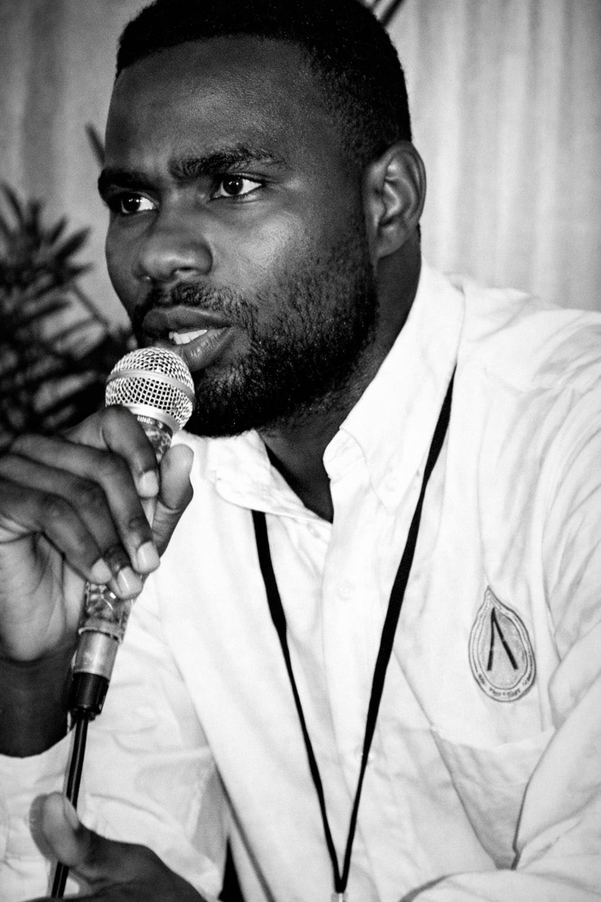
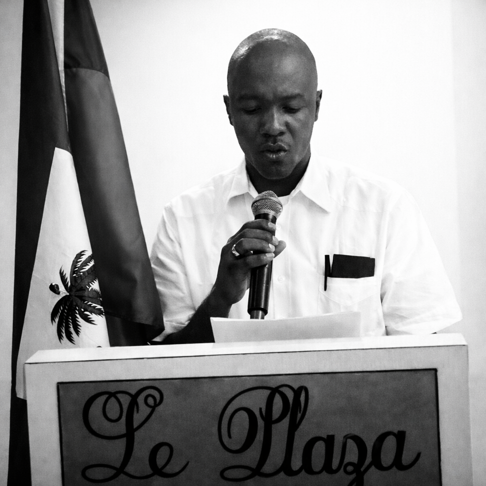

Secrétaire exécutif
REGINALDO CORVIL
Coordination politique et pilotage opérationnel du parti.
Viens militer dans un parti qui n’a participé ni de près ni de loin au chaos actuel, et agir pour faire naître le changement dont nous rêvons tous.
Le PEP est né d'un constat simple et douloureux : la masse paysanne haïtienne, qui a porté le pays à bout de bras depuis l'indépendance de 1804, n'a jamais reçu la reconnaissance ni les moyens qu'elle mérite. Notre vision est de corriger cette injustice historique avec méthode, transparence et efficacité - en garantissant enfin l'accès à l'école, à l'eau courante, à l'électricité, aux routes et à un système de santé digne du 21e siècle.
Reconstruire la légitimité de l'action publique par des résultats visibles, des procédures lisibles et une présence territoriale régulière. L'État doit être au service de tous, et en particulier de ceux qui ont le plus longtemps été laissés pour compte dans les zones rurales.
Créer un horizon collectif autour du travail, de l'éducation, de la sécurité et de la dignité matérielle. Chaque enfant paysan doit pouvoir accéder à une école de qualité, et chaque famille doit avoir accès à l'eau potable, à l'électricité et à des soins de santé accessibles.
Promouvoir un langage politique exact, des engagements mesurables et une discipline d'exécution. La transparence et l'efficacité ne sont pas des options : elles sont le socle de toute action du PEP, du financement jusqu'aux résultats sur le terrain.
Une architecture en réseau qui articule gouvernance nationale, coordination thématique et enracinement territorial.
L'organe souverain qui définit la ligne politique et élit les dirigeants.
Direction stratégique entre deux congrès. Arbitre, oriente, décide.
Ancrage dans les 10 départements et communes pour une action de proximité.
Équipes spécialisées qui produisent la doctrine sectorielle du parti.
Cette section présente les portraits officiels et les biographies courtes des principaux responsables du parti.
Coordination politique et pilotage opérationnel du parti.
Gestion financière, conformité interne et transparence des ressources.

Expression publique, argumentaire et relation avec les médias.

Suivi des décisions, continuité organique et préparation des instances.
Les commissions du PEP sont les organes de travail concret qui relient la pensée politique à l'action sur le terrain. Elles incarnent l'alliance stratégique entre la jeunesse urbaine et la masse paysanne - pilier historique de la nation haïtienne.
C'est le cœur du projet : lier les besoins techniques des paysans aux aspirations politiques des jeunes. La terre haïtienne, travaillée depuis des générations par des familles paysannes sans titre ni protection, doit enfin leur appartenir de droit.
Le marxisme doit être "traduit" dans la réalité haïtienne - un marxisme-kreyòl - pour ne pas paraître étranger à ceux qu'il prétend libérer. L'éducation est le premier outil d'émancipation d'un peuple.
Le capitalisme marchand étouffe le paysan haïtien via des intermédiaires - les spéculateurs - qui captent l'essentiel de la valeur produite par les travailleurs de la terre. Cette commission vise à court-circuiter ces réseaux d'exploitation.
Dans un État défaillant, le parti doit démontrer par l'exemple l'efficacité de l'organisation collective. Accès aux soins, eau courante, électricité, routes praticables : ces services fondamentaux du 21e siècle doivent cesser d'être des privilèges.
Face à l'insécurité grandissante et à l'arbitraire des groupes armés comme de la répression d'État, la protection des citoyens ordinaires - paysans et jeunes militants - est une priorité absolue et non négociable.
La lutte culturelle est primordiale pour contrer l'hégémonie des idées néolibérales. Le Lakou - espace communautaire traditionnel - est un lieu de résistance à valoriser. Les arts portent le message là où la parole politique ne pénètre pas.
Former les cadres et militants à une lecture claire de la crise et du programme.
Produire des notes, tribunes, diagnostics et propositions directement exploitables.
Organiser des campagnes ciblées sur des sujets concrets.
Mesurer les avancées, corriger les angles morts et rendre compte publiquement.
Le PEP doit apparaître comme une force sérieuse, lisible et patiente. Nous croyons que la masse paysanne haïtienne - qui a fait vivre ce pays depuis 1804 - mérite enfin un parti qui lui ressemble : rigoureux, honnête, et orienté vers des résultats concrets.
Partir du vécu des citoyens, notamment des paysans et des communautés populaires, sans flatter ni manipuler. La réalité du terrain guide nos priorités.
Parler juste, documenter, éviter les effets de posture. Chaque engagement du PEP doit être mesurable et rendu public avec transparence.
Assumer les arbitrages et expliquer les choix. La reddition de comptes n'est pas une contrainte : c'est le socle de la confiance populaire que nous voulons mériter.
Construire une force utile sur plusieurs années. Le changement réel - école accessible, eau courante, routes, santé - se construit dans la durée, pas dans les emballements électoraux.